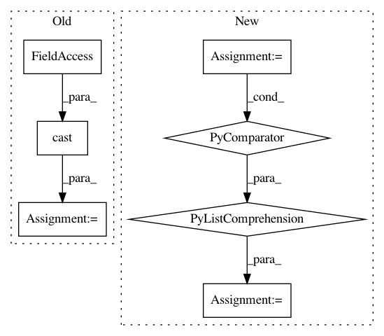

905083cfe74a71e8cbcf5238ce4156c65f4db56d,examples/direct_fidelity_estimation.py,,direct_fidelity_estimation,#Any#Any#Any#Any#Any#,349
Before Change
// inside the variable "pauli_traces".
if clifford_circuit:
assert clifford_state is not None
pauli_traces = _estimate_pauli_traces_clifford(
n_qubits, cast(cirq.CliffordState, clifford_state), n_measured_operators
)
else:
pauli_traces = _estimate_pauli_traces_general(qubits, circuit, n_measured_operators)
p = np.asarray([x.Pr_i for x in pauli_traces])
After Change
clifford_tableau = cirq.CliffordTableau(n_qubits)
try:
for gate in circuit.all_operations():
tableau_args = clifford.ActOnCliffordTableauArgs(
clifford_tableau, [qubit_map[i] for i in gate.qubits], np.random.RandomState(), {}
)
cirq.act_on(gate, tableau_args)
except TypeError:
clifford_circuit = False
In pattern: SUPERPATTERN
Frequency: 3
Non-data size: 7
Instances
Project Name: quantumlib/Cirq
Commit Name: 905083cfe74a71e8cbcf5238ce4156c65f4db56d
Time: 2020-12-10
Author: tony.bruguier@gmail.com
File Name: examples/direct_fidelity_estimation.py
Class Name:
Method Name: direct_fidelity_estimation
Project Name: mortendahl/tf-encrypted
Commit Name: e086b02bf4d19fbdcc751bfa876d03f2fcdaf375
Time: 2019-01-10
Author: mortendahlcs@gmail.com
File Name: tf_encrypted/tensor/int100.py
Class Name: Int100Factory
Method Name: tensor
Project Name: quantumlib/Cirq
Commit Name: baddb11a55a68c29cdc319bc9dde6e0a24ad32fe
Time: 2020-12-08
Author: dabacon@gmail.com
File Name: cirq/ionq/serializer.py
Class Name: Serializer
Method Name: serialize